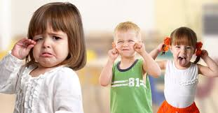
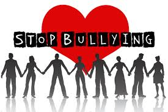

What is Bullying?
Most children have been teased by a sibling or friend at some point. It’s usually not harmful when done in a playful, friendly and mutual way – and when both children find it funny. When teasing becomes hurtful, unkind and constant, it crosses the line into bullying.
Bullying is when someone repeatedly and on purpose says or does mean or hurtful things to another person who has a hard time defending himself or herself (Olweus Bullying Prevention Program).
More specifically, according to the Olweus program, “bullying, harassment or intimidation” means either: violence within a dating relationship, or any intentionally written, electronic act (an act committed through the use of cellular telephone, computer, pager, personal communication device or other electronic communication device), verbal, graphic or physical act that a student or group of students exhibit more than once toward another student(s) and the behavior:
Causes mental or physical harm to the other student(s).
Is sufficiently severe, persistent or pervasive that it creates an intimidating, threatening, or abusive educational environment for the other student(s).
Bullying, harassment or intimidation includes, but is not limited to, conduct that is based on a student’s actual or perceived race, color, national origin, sex, disability, sexual orientation, gender identity or expression, religion or any other distinguishing characteristics that may be defined by the district or state educational agency. This also includes association with a person or group with one or more of the above mentioned characteristics, whether actual or perceived.

Bullying involves an imbalance of power. In a bullying situation, the student who is exposed to the negative actions has difficulty defending himself and is somewhat helpless against the student who is bullying. The student may actually be physically or emotionally weaker than the other student, or may perceive that they are physically or emotionally weaker (Olweus Bullying Prevention Program).
What is Cyberbullying?
Cyberbullying is bullying that takes place using electronic technology, which includes devices and equipment such as cellphones, computers and tablets as well as communication tools including social media sites, text messages, chat and websites. Examples of cyberbullying include posting slurs on websites where students congregate or on web logs (personal online journals or diaries); sending abusive or threatening instant messages; using camera phones to take embarrassing photographs of students and posting them online; using websites to circulate gossip and rumors to other students; and excluding others from an online group by falsely reporting them for inappropriate language to internet service providers.
What is Cincinnati Public Schools’ Anti-Bullying, Anti-Harassment and Anti-Intimidation Policy?
Cincinnati Public Schools Board Policy 5517.01 states that bullying, harassment and intimidation of any student, by any means, by any student or school personnel, on school property, at a school-sponsored event or on school-provided transportation, is strictly prohibited. Disciplinary action, including the possibility for suspension or expulsion, will be taken against any student found responsible for harassment, intimidation or bullying.
What Should I Do if I Think My Child is Being Bullied?
Options for reporting incidents of bullying include:
1. At the school site, the parent identifies the concern and brings that concern to teacher, principal or other school staff member. If preferred, a parent can choose to make an anonymous report at the school site or call the Customer Help Center at 513-363-0123.
2. Parents also can contact the Customer Help Center, or in person in our district headquarters located at 2651 Burnet Avenue in Corryville (45219). If a parent’s concern was not resolved satisfactorily, the Customer Help Center will take the concern to the appropriate Assistant Superintendent.
3. Steps will be taken to protect a victim or other person from new or additional harassment, intimidation or bullying and from retaliation following a report.
What Are the Warning Signs?
There are several warning signs that could indicate that your child is experiencing bullying at school. Please be alert for:
1. An unexpected drop in grades and/or interest.
2. Unusual moodiness, depression, anxiety or crying.
3. Frequent headaches or stomachaches.
4. Loss of appetite or trouble sleeping.
5. Damaged or missing clothing, books, or other belongings.
6. Unexpected bruises, cuts or scratches.
7. Few or no friends.
8. Fear of going to school, riding the bus, or walking to/from school.
9. Taking an illogical or long route home.
How Can I Support my Child if He is Being Bullied?
(Olweus Bullying Prevention Program)
1. Never tell your child to ignore the bullying.
2. Don’t blame your child for the bullying.
3. Allow your child to talk about his or her bullying experiences and write down what is shared.
4. Empathize with your child. Tell him/her that bullying is wrong, that it is not his/her fault, and that you are glad he/she had the courage to tell you.
5. If you disagree with how your child handled the situation, don’t criticize him or her. It is often very difficult for children to know how to respond best.
6. Do not encourage physical retaliation.
7. Check your emotions. Although it is difficult, step back and consider the next steps carefully.
8. Contact a teacher, principal, or the Customer Help Center at your school immediately and share your concerns about the bullying that your child has experienced.
9. Work closely with school personnel to help solve the problem.
10. Encourage your child to develop interests and hobbies that will help build resiliency in difficult situations.
11. Encourage your child to make contact with friendly students in his/her class, or help your child meet new friends outside of school.
12. Teach your child safety strategies, such as how to seek help from an adult.
13. Make sure your child has a safe and loving home environment.
14. If you or your child need additional help, seek it from a mental health professional.
